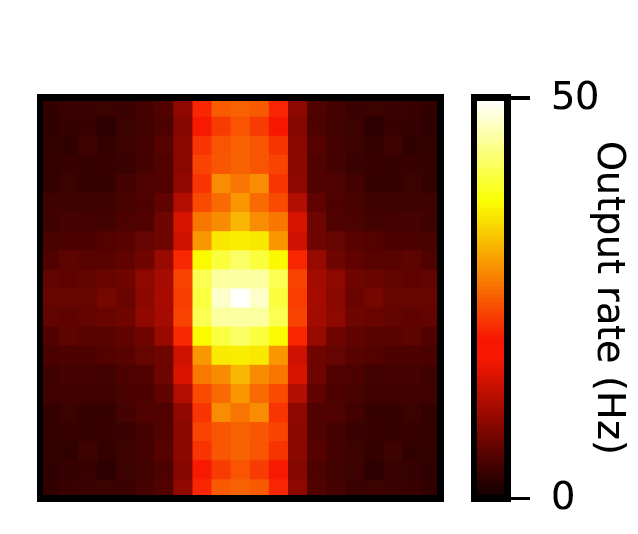

The models associated with the paper: Yang GR, Murray JD, Wang XJ (2016) A dendritic disinhibitory circuit mechanism for pathway-specific gating. Nat Commun 7:12815 are available at Github: https://github.com/gyyang/DisinhibitoryCircuit2016 Note from the ModelDB Administrator: Uncommenting these lines in the run_all_figure.py program: PG = PathwayGating.Study(**args) # Run the neuron with two pathways of input, with varying strength of each pathway (different modes) PG.run_basic_pathway_gating(mode='specific') PG.plot_basic_pathway_gating(mode='specific') and creating a figure subfolder and running with the commands mkdir figure python run_all_figure.py generates the following in the figure folder which is similar to figure 2g in the paper: 